Creative ways to practice Openshift
See the yaml work on the yaml
Small poc as possible is the goal
Create Repo >https://github.com/rifaterdemsahin/openshift/tree/main
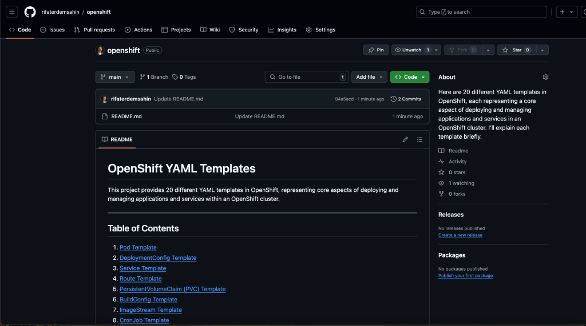
Delete Not Used Repl faster file creation process
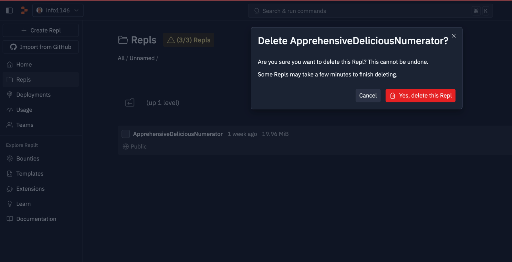
Github integration fast action
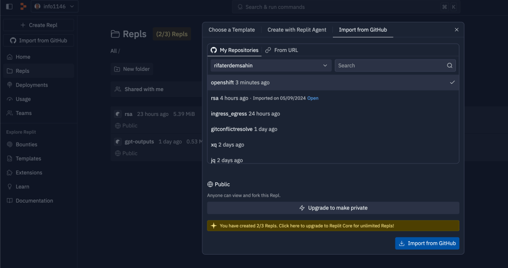
push the file and read it
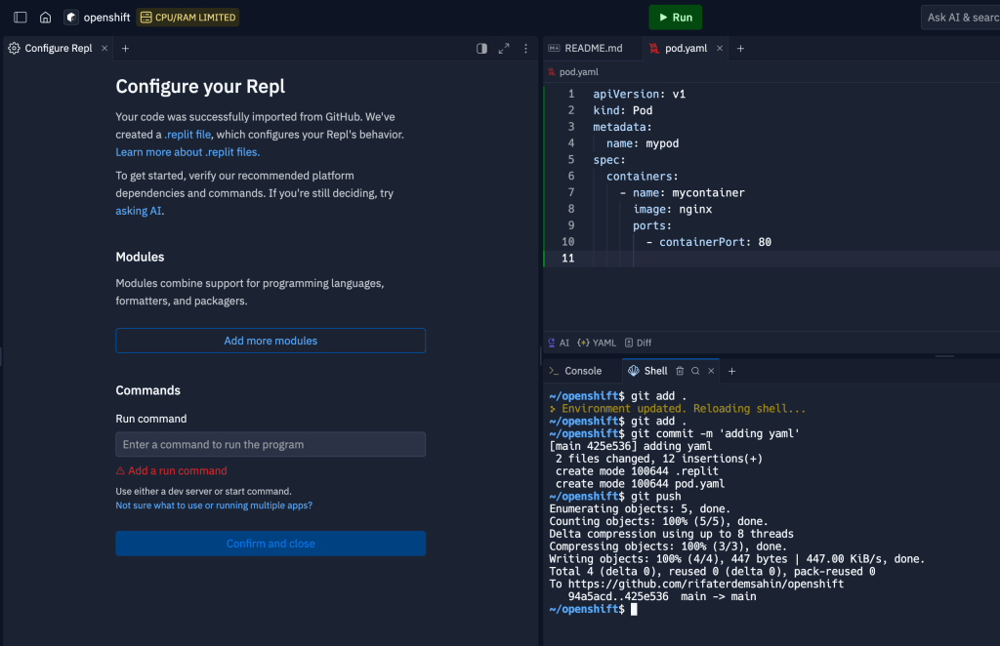
Check Files
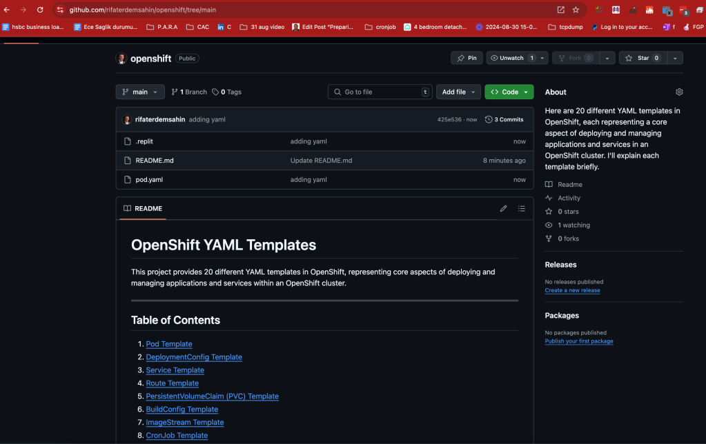
Gpt request for practical saves
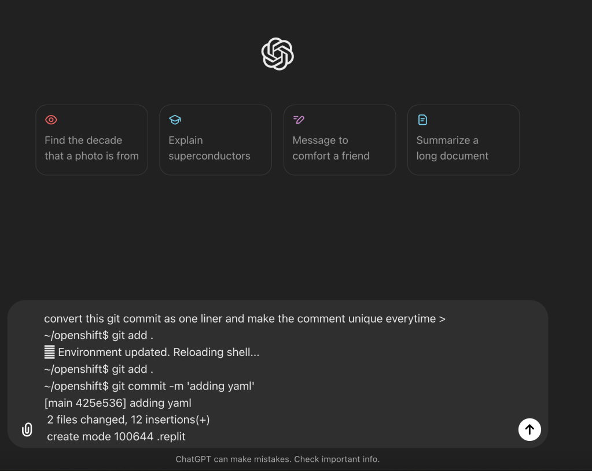
To make your Git commit process a one-liner with a unique comment each time, you can use the following shell command:
git add . && git commit -m "update $(date '+%Y-%m-%d %H:%M:%S')" && git push
This command will:
-
git add .- Stage all changes. -
git commit -m "update $(date '+%Y-%m-%d %H:%M:%S')"- Commit with a unique message using the current date and time. -
git push- Push the changes to the remote repository.
Every time you run this command, the commit message will be unique due to the timestamp.
new file faster faster push
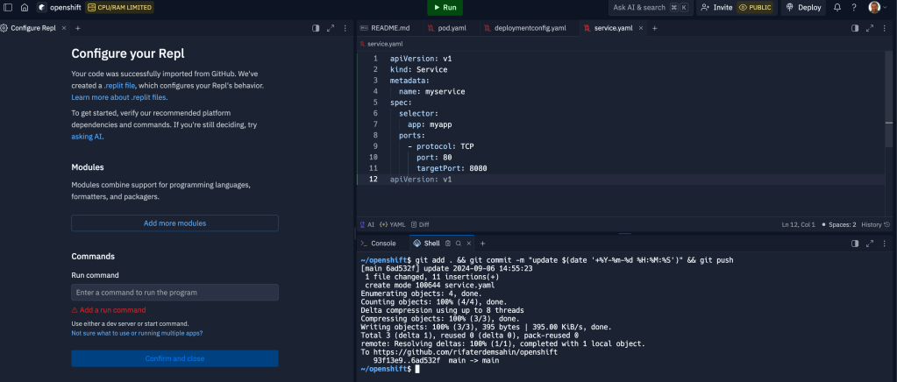
Date is at least a bigger marker > but a dublicate
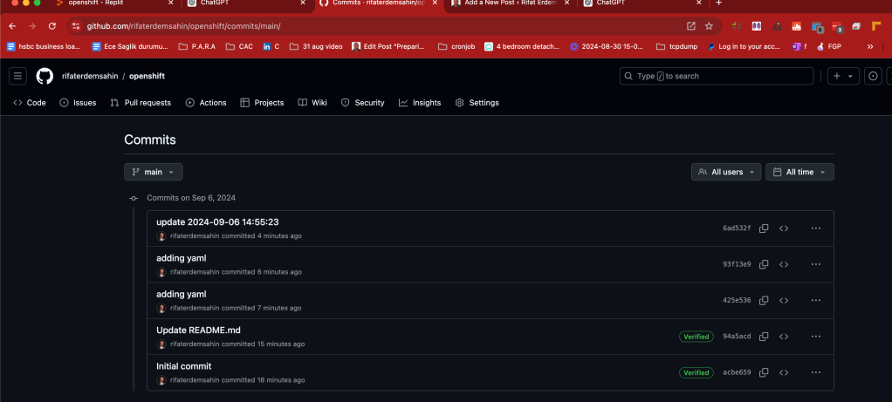
linting is there as well online
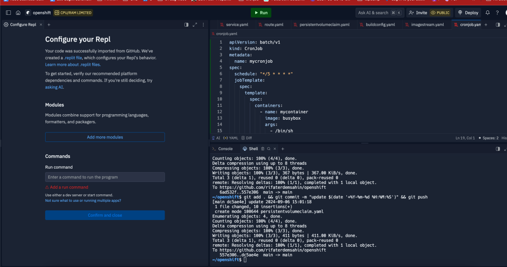
Bulk Push
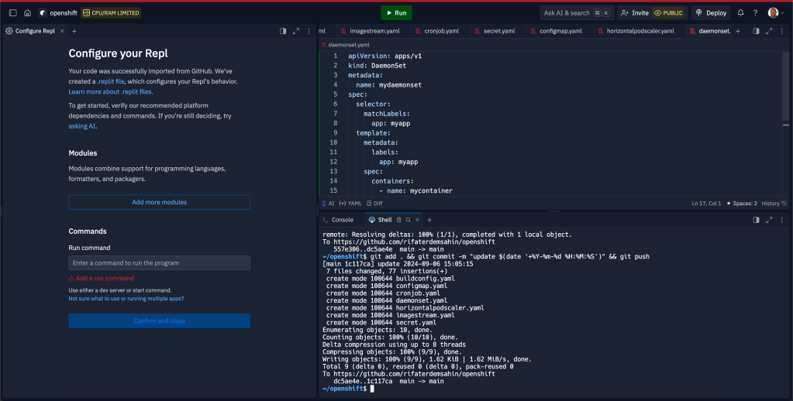
Here are 20 different YAML templates in OpenShift, each representing a core aspect of deploying and managing applications and services in an OpenShift cluster. I'll explain each template briefly.
1. Pod Template
apiVersion: v1
kind: Pod
metadata:
name: mypod
spec:
containers:
- name: mycontainer
image: nginx
ports:
- containerPort: 80
- Explanation: This is a basic template to create a Pod in OpenShift. A Pod is the smallest deployable unit and runs containers.
2. DeploymentConfig Template
apiVersion: v1
kind: DeploymentConfig
metadata:
name: myapp
spec:
replicas: 3
template:
metadata:
labels:
app: myapp
spec:
containers:
- name: mycontainer
image: nginx
- Explanation: A
DeploymentConfigmanages pod creation, scaling, and updates for applications in OpenShift.
3. Service Template
apiVersion: v1
kind: Service
metadata:
name: myservice
spec:
selector:
app: myapp
ports:
- protocol: TCP
port: 80
targetPort: 8080
- Explanation: Services expose a group of Pods and make them accessible internally within the OpenShift cluster or externally.
4. Route Template
apiVersion: route.openshift.io/v1
kind: Route
metadata:
name: myroute
spec:
to:
kind: Service
name: myservice
- Explanation: A
Routeallows external traffic to reach a service running within OpenShift.
5. PersistentVolumeClaim (PVC) Template
apiVersion: v1
kind: PersistentVolumeClaim
metadata:
name: mypvc
spec:
accessModes:
- ReadWriteOnce
resources:
requests:
storage: 1Gi
- Explanation: A PVC requests storage from the OpenShift cluster, and it's used by Pods that need persistent storage.
6. BuildConfig Template
apiVersion: build.openshift.io/v1
kind: BuildConfig
metadata:
name: myapp-build
spec:
source:
type: Git
git:
uri: "https://github.com/example/myapp.git"
strategy:
type: Docker
- Explanation: A
BuildConfigdefines how to build an image from source code in OpenShift.
7. ImageStream Template
apiVersion: image.openshift.io/v1
kind: ImageStream
metadata:
name: myapp
- Explanation: An
ImageStreamtracks image versions in OpenShift, allowing easy management and updates of container images.
8. CronJob Template
apiVersion: batch/v1
kind: CronJob
metadata:
name: mycronjob
spec:
schedule: "/5 * * * "
jobTemplate:
spec:
template:
spec:
containers:
- name: mycontainer
image: busybox
args:
- /bin/sh
- -c
- date; echo Hello from the cron job
restartPolicy: OnFailure
- Explanation: A
CronJobruns scheduled tasks at specified intervals within OpenShift.
9. Secret Template
apiVersion: v1
kind: Secret
metadata:
name: mysecret
type: Opaque
data:
username: YWRtaW4=
password: MWYyZDFlMmU=
- Explanation:
Secretstores sensitive information like passwords, API tokens, and more.
10. ConfigMap Template
apiVersion: v1
kind: ConfigMap
metadata:
name: myconfig
data:
app.properties: |
key1=value1
key2=value2
- Explanation: A
ConfigMapstores non-sensitive data that can be used by applications in the OpenShift environment.
11. HorizontalPodAutoscaler (HPA) Template
apiVersion: autoscaling/v1
kind: HorizontalPodAutoscaler
metadata:
name: myapp-hpa
spec:
scaleTargetRef:
apiVersion: apps/v1
kind: Deployment
name: myapp
minReplicas: 2
maxReplicas: 10
targetCPUUtilizationPercentage: 80
- Explanation: HPA automatically scales the number of Pods in a deployment based on CPU utilization.
12. DaemonSet Template
apiVersion: apps/v1
kind: DaemonSet
metadata:
name: mydaemonset
spec:
selector:
matchLabels:
app: myapp
template:
metadata:
labels:
app: myapp
spec:
containers:
- name: mycontainer
image: nginx
- Explanation: A
DaemonSetensures that all or some nodes run a copy of a specific Pod.
13. StatefulSet Template
apiVersion: apps/v1
kind: StatefulSet
metadata:
name: mystatefulset
spec:
serviceName: "myapp"
replicas: 3
selector:
matchLabels:
app: myapp
template:
metadata:
labels:
app: myapp
spec:
containers:
- name: mycontainer
image: nginx
- Explanation: A
StatefulSetmanages stateful applications, ensuring ordered deployment and scaling of Pods.
14. Job Template
apiVersion: batch/v1
kind: Job
metadata:
name: myjob
spec:
template:
spec:
containers:
- name: mycontainer
image: busybox
args:
- /bin/sh
- -c
- echo Hello World
restartPolicy: Never
- Explanation: A
Jobruns a one-time task until completion.
15. ServiceAccount Template
apiVersion: v1
kind: ServiceAccount
metadata:
name: myserviceaccount
- Explanation: A
ServiceAccountprovides identity for Pods to interact with the OpenShift API.
16. Role Template
apiVersion: rbac.authorization.k8s.io/v1
kind: Role
metadata:
namespace: mynamespace
name: pod-reader
rules:
- apiGroups: [""]
resources: ["pods"]
verbs: ["get", "watch", "list"]
- Explanation: A
Roledefines access permissions to resources within a specific namespace.
17. RoleBinding Template
apiVersion: rbac.authorization.k8s.io/v1
kind: RoleBinding
metadata:
name: read-pods
subjects:
- kind: User
name: jane
roleRef:
kind: Role
name: pod-reader
apiGroup: rbac.authorization.k8s.io
- Explanation: A
RoleBindinggrants a user or group access to resources within a namespace.
18. NetworkPolicy Template
apiVersion: networking.k8s.io/v1
kind: NetworkPolicy
metadata:
name: allow-http
spec:
podSelector:
matchLabels:
app: myapp
ingress:
- from:
- ipBlock:
cidr: 172.17.0.0/16
ports:
- protocol: TCP
port: 80
- Explanation: A
NetworkPolicycontrols the traffic flow between Pods in an OpenShift cluster.
19. LimitRange Template
apiVersion: v1
kind: LimitRange
metadata:
name: mem-limit-range
spec:
limits:
- max:
memory: "1Gi"
min:
memory: "128Mi"
type: Container
- Explanation: A
LimitRangeenforces minimum and maximum resource usage constraints for Pods in a namespace.
20. ResourceQuota Template
apiVersion: v1
kind: ResourceQuota
metadata:
name: my-quota
spec:
hard:
pods: "10"
requests.cpu: "4"
requests.memory: "4Gi"
limits.cpu: "8"
limits.memory: "16Gi"
- Explanation: A
ResourceQuotalimits the resource usage within a namespace.
These templates represent essential building blocks for deploying and managing applications in OpenShift.
missing ones with gpt
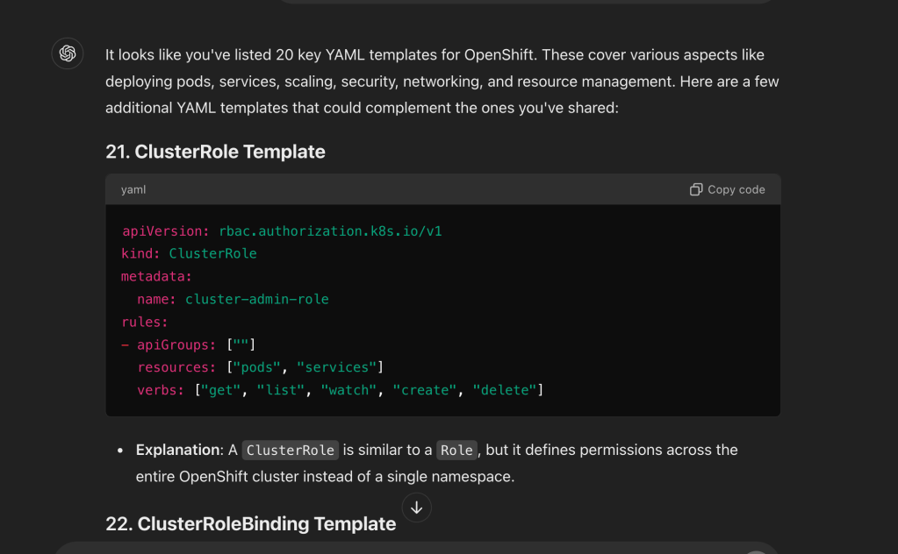
Update the index > https://github.com/rifaterdemsahin/openshift/blob/main/README.md#20-resourcequota-template
🔗 Connect with me:
-
💼 LinkedIn: https://www.linkedin.com/in/rifaterdemsahin/
-
🐦 Twitter: https://x.com/rifaterdemsahin
-
🎥 YouTube: https://www.youtube.com/@RifatErdemSahin
-
💻 GitHub: https://github.com/rifaterdemsahin
Imported from rifaterdemsahin.com · 2024